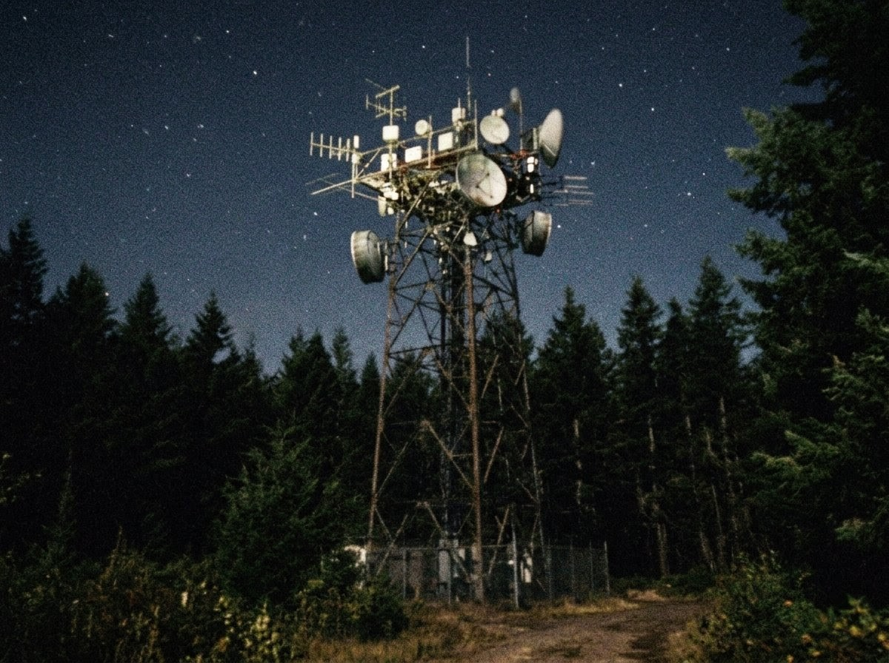
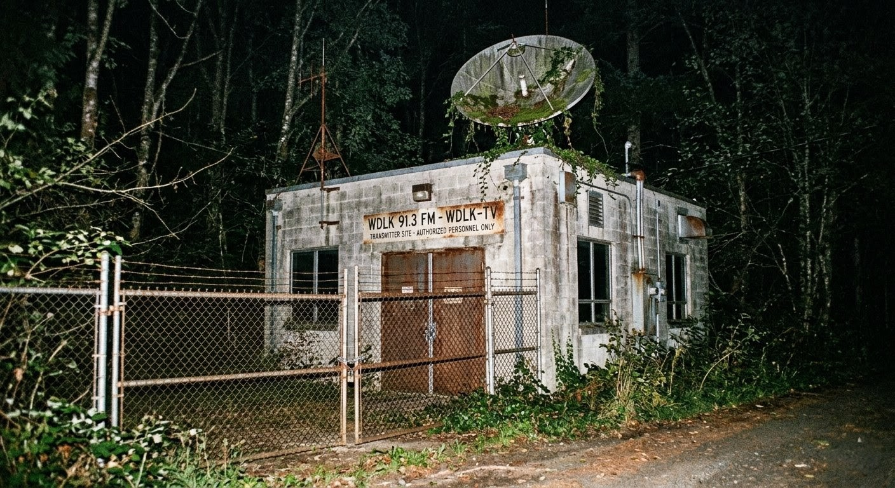
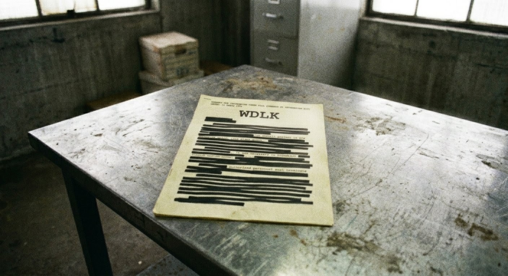
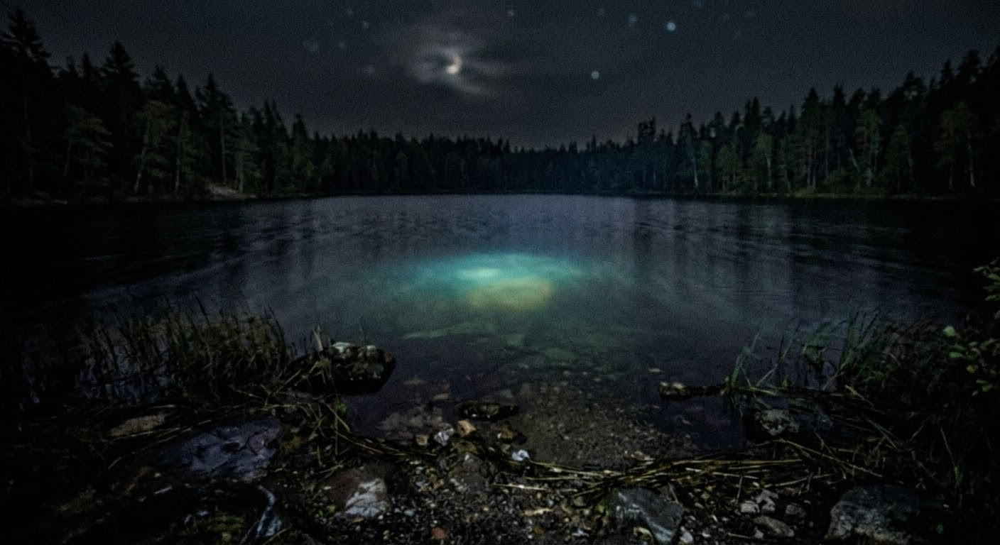

To the outside world, Deep Lake, Oregon is a quiet mountain town of roughly 4,200 people. Nothing special. Nothing worth looking at. That's exactly what they want you to think.
I grew up 40 miles from Deep Lake. I had a cousin who lived there in the early 90s. She told me things. Things about a television station that broadcast programs nobody had ever heard of. Programs that weren't listed in any TV guide. Programs that children watched while their parents were at work. Programs that changed things.
My cousin moved away in 1994. She doesn't remember any of this. She doesn't remember telling me. She doesn't remember much of anything from those years. She's not the only one.
I have spent FOUR YEARS researching Deep Lake. What I've found points to one of three possibilities:
1. MKULTRA SUBPROJECT — Deep Lake was a test site for a CIA subliminal programming experiment using local broadcast television as a delivery mechanism. The programs were designed to test suggestibility and memory manipulation in children. (60% confidence)
2. DARPA FREQUENCY EXPERIMENT — The WDLK broadcast tower was emitting a non-standard carrier frequency alongside normal programming. This frequency affected neural development in children exposed over time. The "shows" were cover for the real payload: the signal itself. (25% confidence)
3. CORPORATE BLACK SITE — An unnamed defense contractor used Deep Lake as an isolated testing ground for a technology I don't fully understand. The station was a front. The programming was a byproduct. The real operation was underground. (15% confidence)
I know how this sounds. I know you're probably thinking "another conspiracy nut." That's fine. Read the evidence. Make up your own mind. But answer me this: if TV Odyssey was just a normal public access channel, why does the FCC have NO RECORD of its broadcast license? Why does every child who watched it have gaps in their memory? And why is the station building still standing, maintained by NOBODY, owned by a holding company registered in REDACTED, Delaware?
Below is everything I've collected. Judge for yourself. Click images to enlarge. (Note: some images are low quality. I work with what I can get.)




Additional evidence I cannot post online for legal reasons. If you're a journalist or researcher, contact me for the full file.
NOTE: Three of my evidence photos were corrupted in August 2003. I had backups, but the backups were ALSO corrupted. Same three photos. Different hard drive. Different physical location. Draw your own conclusions.
All dates approximate unless noted. Sources vary.
1983 (?) — WDLK station building constructed on Route 7, Deep Lake.
Contractor: unknown. No building permits on file at county
office. (I checked. Twice.)
1984 — First known TV Odyssey broadcasts. Programming appears
on channel 34. No announcement, no launch event. It's
just suddenly THERE.
1984-1996 — Continuous broadcasting. Mix of original programming:
children's cartoons, educational shows, locally-produced
movies, talk shows. All original content. None of it
registered with any copyright office.
1987 — FOIA document (see Evidence page) dated this year.
Only confirmed government document mentioning anything
related.
1989 — First reported "incident" I can verify. A family on
Spruce Street reports their XXXXXXX to police.
Case closed in 48 hours. No follow-up.
1991 — Ray Calloway becomes station manager (?). Name appears
on utility bills for the station starting this year.
No public record of a "Ray Calloway" existing in Oregon
before 1991. No birth certificate. No SSN match. WHO
IS RAY CALLOWAY?
1993 — Three families leave Deep Lake within the same month.
No forwarding addresses. Homes sold at a loss.
1996 — TV Odyssey goes off the air. No final broadcast, no
sign-off. Channel 34 goes to static. Nobody officially
acknowledges it was ever there.
1996-2004 — Station building remains standing. Ownership transferred
to "Lakeview Holdings LLC." Registered in Delaware.
No employees. No revenue. No physical office.
They pay the property tax. Every year. On time.
1999 — This website launched. I start getting emails almost
immediately. Some helpful. Some threatening.
2002 — Someone on a web forum (TVOdysseyFans.net) claims to
have found a tape. Thread deleted within 24 hours.
I could not reach the user.
2003 — Anonymous email: "You're closer than you think.
Stop looking at the sky. Look at the ground."
I don't know what this means yet.
The WDLK building sits at 14200 Route 7, Deep Lake, OR. Single-story commercial structure with a broadcast tower approximately 180 feet tall on the north side of the property.
Here's what doesn't make sense about this building:
1. THE LICENSE: The call letters "WDLK" follow east-of-the-Mississippi convention (W-prefix). Oregon stations should use K-prefix. This is not a minor error. This is a federal regulation. Every legitimate station in Oregon starts with K. WDLK is either not legitimate or was deliberately assigned incorrect call letters. Either way, the FCC has no record of it.
2. THE TOWER: The broadcast tower has equipment on it that I cannot identify and I have been an amateur radio operator for 22 years. Standard UHF/VHF broadcast antennas are well-documented. The arrays on the WDLK tower don't match any commercial broadcast configuration I can find. There are at least three dish-like structures that are aimed DOWNWARD. Broadcast dishes point at the horizon or at satellites. These point at the ground. At Deep Lake itself.
3. THE POWER: The station building still draws power. I confirmed this with a source at the county utility office. The account is current. It's billed to Lakeview Holdings LLC. The monthly usage is consistent with a building that is running equipment — not an empty structure with a security light. Something in that building is ON.
4. RAY CALLOWAY: I have found exactly one photograph that may show Ray Calloway. It's from a 1992 Deep Lake Community Newsletter (scanned at the library before they "lost" that volume). A group photo at a town picnic. The caption lists names. One of them is R. Calloway. The man in the photo is looking away from the camera. Every other person is facing forward. I cannot confirm this is the same Ray Calloway from the station utility bills because Ray Calloway does not appear to exist outside of Deep Lake.
I have attempted to enter the building twice. The first time, the doors were locked with hardware that looked new — not 1996 abandoned-building locks. The second time, a REDACTED county sheriff's vehicle pulled into the lot within four minutes of my arrival. I was told I was trespassing on private property. I left. I have not been back.
If you have information about Deep Lake, TV Odyssey, WDLK, Ray Calloway, or Lakeview Holdings LLC, I want to hear from you.
Email: gerald@findthelight.org
PGP key available on request. I recommend encrypting sensitive communications.
If you are a former resident of Deep Lake: I know what you're going through. The memory gaps are real. You are not crazy. Reach out. We can figure this out together.
If you are affiliated with any government agency or Lakeview Holdings LLC: I have copies of everything in multiple locations. Taking this site down will not help you.
NOTE TO LAW ENFORCEMENT: Everything on this website is protected speech under the First Amendment. All photographs were taken from public roads. No laws were broken in the creation of this site. I have consulted with an attorney. Don't bother.